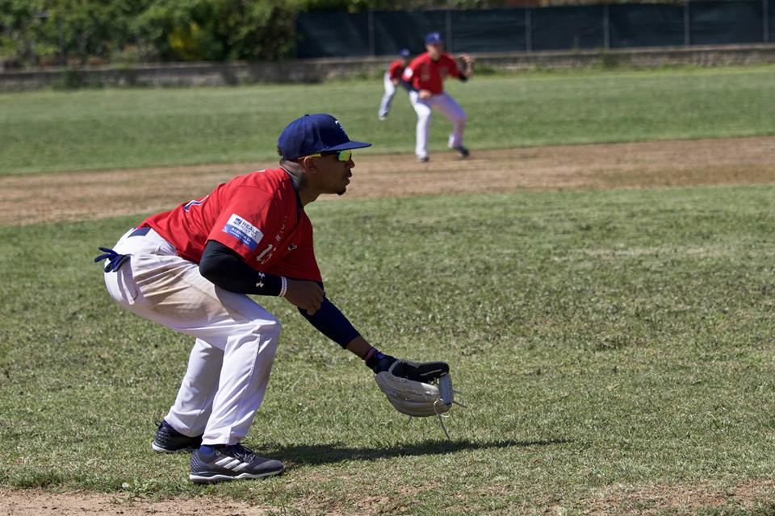
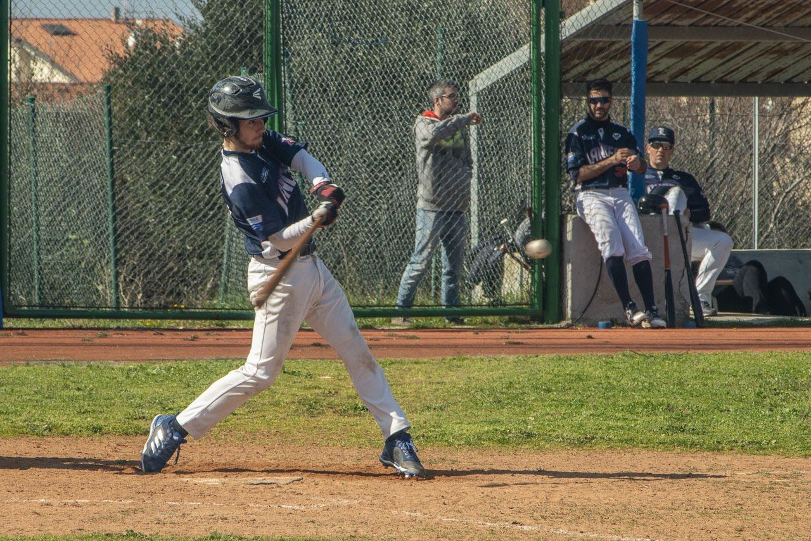

Termina con un pareggio la terza giornata del girone di ritorno per la nostra Serie B, i padroni di casa dei Lancers dominano la gara del mattina con un perentorio 10 a 0 all’ottava ripresa, poi cedono la partita pomeridiana alla Catalana Alghero per 4 a 6 sfiorando di poco la rimonta.
Gara 1 non è mai stata in discussione, l’attacco lastrigiano segna già 4 punti al primo inning e difende in maniera perfetta i tentativi di attacco dei sardi con giocate di livello; quattro inning terminano con doppio gioco tra interbase e seconda base.
Arrivano altri punti per i Lancers al terzo (1) e quarto (3) inning finché la valida di Ortiz non fa entrare all’ottava ripresa il punto necessario a terminare con anticipo la gara.
Nel box uno scatenatissimo Pasquini rientrato da un intenso periodo di baseball tra Torneo delle Regioni nelle Marche e Torneo International Stars di Praga.
Difesa impeccabile che ha sostenuto il partente Perez nel raggiungimento della sua sesta vittoria in campionato.
La Catalana Alghero conserva i suoi lanciatori migliori per gara 2, partente Leonardo D’Amico e rilievo il fratello Yovani, due pitcher con un ricco passato in serie A1.
I Lancers schierano sul monte come di consueto Menoni che si rende protagonista di un’altra ottima partenza; solo un punto subito alla quarta ripresa.
Le mazze bianco/blu soffrono i cambi di velocità del lanciatore avversario e non riescono a concretizzare fino a quando, sul punteggio di 2 a 0 a favore della squadra sarda, una battuta di Nannucci pareggia l’incontro.
La reazione degli ospiti è però immediata e al cambio campo arrivano altri due punti sul rilievo Degl’Innocenti e altrettanti al nono attacco su Nannucci, salito sul mound a sostituire il compagno di squadra.

All’ultimo attacco a disposizione i Lancers creano i presupposti per un’epica rimonta, Belnabè batte valido, Nannucci conquista una base su ball ed entrambi avanzano di una base su lancio pazzo.
Parrini batte valido al centro e porta il punteggio sul 6 a 3, sull’azione conquista la seconda base seguendo ad una sola distanza Nannucci rimasto in terza.
Con un out Repetti batte valido a destra e fa avanzare di una base i compagni, Nannucci segna il 6 a 4 e Parrini si ferma in terza; la rimonta purtroppo non si concretizza, Pasquini viene eliminato al volo e con due out Canò finisce strikeout.
Due belle partite con un buon livello di baseball espresso dai Lancers come sottolineato dallo staff tecnico a fine giornata; vincerne due avrebbe sicuramente aiutato in ottica classifica ma già alla vigilia gli incontri si preannunciavano difficili in quanto la Catalana occupa, come i Lancers, la parte alta della classifica.
Prossimo incontro per i ragazzi di Barbieri & Co. domenica 7 Luglio sul campo del Salerno.